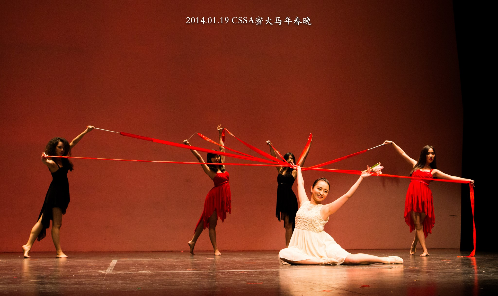
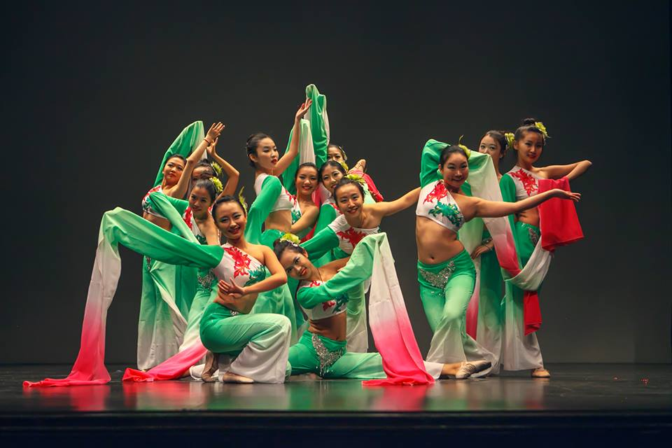
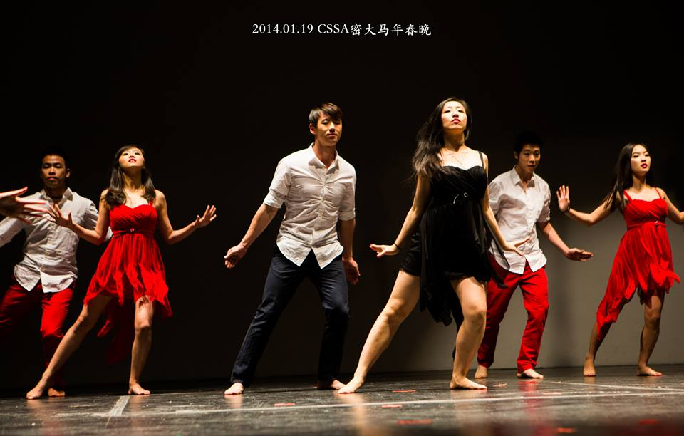
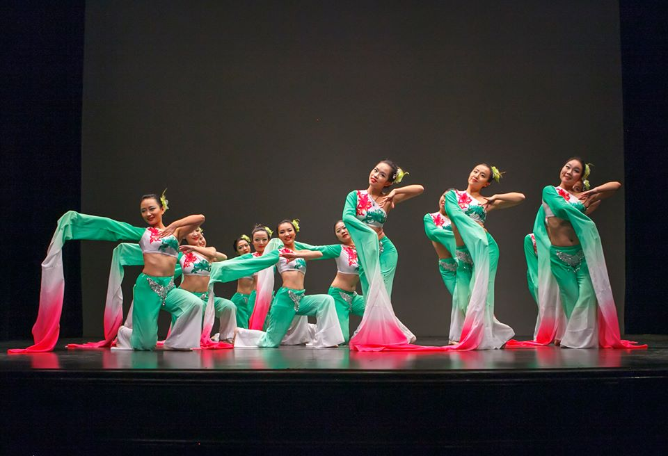

Moli 茉莉
Moli Dance Troupe was established in 2013 by a group of enthusiastic Chinese dance lovers. In the fall of 2013, Moli's very first debut dance "Xiu Se" (The elegance of the sleeves), performed in Mendelssohn Theater, was a huge success. "Xiu Se" and the dance troupe have since attracted many more students who are interested in Chinese culture and Chinese dance.
Our dance troupe aims to promote Chinese culture and eastern philosophy through the beauty of performing arts. Moli brings to our audience an eclectic collection of dances and performances that evolve from China's thousands years of history: from tribal ethnic dances, to ancient classical dances, and eventually to modern chinese fusion dances. Through Moli, we bring to the University of Michigan community a unique set of eastern movements, thinking, and arts.
Moli's literal meaning is the jasemine flower, which is a symbol of friendship in Chinese culture. We welcome both experienced and inexperienced dancers to join the dance troupe. In the long run, Moli aims to expand the realm of performance to Chinese Drama and Chinese costume modeling. We firmly believe that while Moli brings to our audience the best pieces of performing arts from Chinese culture, the strong interests in Eastern arts and dancing in the University of Michigan community will continue support us and help Moli grow.
茉莉舞团是一个2013年成立的，以中国传统舞蹈为基础，向各艺术类演出发展的多元化社团。成立之初,就集结了一帮对热爱舞蹈,渴望在各方面展现和拓展自我的优秀社员，并在上学期的密大好声音上成功地完成了首秀《袖色》的演出。在华人圈留下了良好的口碑。2014年，我们再次启航。在春晚上，我们以新的姿态席卷而来，《以爱之名》为舞团带来不同的激情元素。敬请期待我们在Asian City，Closing Event以及非诚勿扰的演出！